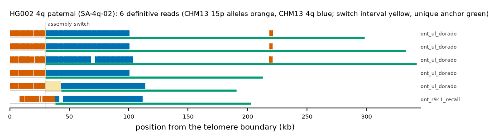

HG002 4q paternal: SA-4q-02
Claim HG002#1#chr4_PATERNAL#R. All claims
- cohort
- HG002 Q100
- individual
- HG002
- haplotype
- paternal
- arm
- 4q
- allele
- SA-4q-02 (foreign)
- model
- donor CHM13 15p, proximal CHM13 4q, recipient CHM13 4q, pattern DP
- claimed end(s)
HG002#1#chr4_PATERNAL#R- assembly switch
- 29,632 bp from the telomere boundary; on CHM13 chr4:193502715; own-window projection 29500-30300 bp
- v1 verdict
- confirmed (confirmed)
- definitive tier
- definitive (>= 2 datasets)
- reads
- 11 conclusive switch-concordant, 0 discordant, 0 contradicting, 75 consistent; 6 definitive (ont_r941_recall,ont_ul_dorado)
- by tier
- definitive:6;conclusive_shared_anchor:5;consistent:75
- source
- HG002 Q100 v1.1 public read alignments (16 files; 12 independent datasets after molecule de-duplication)

Conclusive and contradicting reads (11)
98 further reads are consistent (switch test passed, but no terminal telomere, anchor or integrity); they are
listed in reads.tsv.gz. Switch: 95% interval in subtelomere coordinates (kb from the
telomere boundary) and projected on CHM13 4q. Each samtools command prints the read's record
from its public file (CRAM: add the CHM13 v2.0 FASTA as -T).
| read | dataset | tier | length | switch (subtelomere, kb) | switch on CHM13 | donor units / purity | proximal units / purity | anchor (CHM13, MAPQ, unique) | own-assembly best end | fetch |
|---|---|---|---|---|---|---|---|---|---|---|
b0b15874-5a9b-4fe2-b995-79d3a9f58178 | ont_r941_recall | definitive | 203,240 | 37.5-38.3 | chr4:193543168-193543968 | 127 / 1.00 | 348 / 1.00 | chr4:193354500-193520086, 60, 36.7 kb | HG002#1#chr4_PATERNAL#R (92.0%) ✓ | samtoolssamtools view -F 0x900 -X 'https://human-pangenomics.s3.amazonaws.com/T2T/HG002/assemblies/polishing/HG002/v1.1/mapping/ont_methylation_recall_oct2024/03_08_22_R941_HG002.pri.bam' 'https://human-pangenomics.s3.amazonaws.com/T2T/HG002/assemblies/polishing/HG002/v1.1/mapping/ont_methylation_recall_oct2024/03_08_22_R941_HG002.pri.bam.bai' 'chr4_PATERNAL:192322718-192384017' | awk -v r='b0b15874-5a9b-4fe2-b995-79d3a9f58178' '$1==r' |
fa55cc3b-a3e3-4711-9362-bd8f9b978417 | ont_ul_dorado | definitive | 343,567 | 29.3-30.1 | chr4:193543291-193544091 | 130 / 1.00 | 366 / 0.96 | chr4:193206020-193520207, 60, 183.6 kb | HG002#1#chr4_PATERNAL#R (97.1%) ✓ | samtoolssamtools view -F 0x900 -X 'https://human-pangenomics.s3.amazonaws.com/T2T/HG002/assemblies/polishing/HG002/v1.1/mapping/ont_r10_ul_dorado/hg002v1.1_ont_r10_ul_dorado.pri.bam' 'https://human-pangenomics.s3.amazonaws.com/T2T/HG002/assemblies/polishing/HG002/v1.1/mapping/ont_r10_ul_dorado/hg002v1.1_ont_r10_ul_dorado.pri.bam.bai' 'chr4_PATERNAL:192322718-192384017' | awk -v r='fa55cc3b-a3e3-4711-9362-bd8f9b978417' '$1==r' |
f341e1d5-9ee2-49ac-a60f-67aaeb3d89ff | ont_ul_dorado | definitive | 333,524 | 29.3-30.1 | chr4:193543283-193544083 | 137 / 1.00 | 365 / 0.96 | chr4:193215381-193520199, 60, 174.2 kb | HG002#1#chr4_PATERNAL#R (96.9%) ✓ | samtoolssamtools view -F 0x900 -X 'https://human-pangenomics.s3.amazonaws.com/T2T/HG002/assemblies/polishing/HG002/v1.1/mapping/ont_r10_ul_dorado/hg002v1.1_ont_r10_ul_dorado.pri.bam' 'https://human-pangenomics.s3.amazonaws.com/T2T/HG002/assemblies/polishing/HG002/v1.1/mapping/ont_r10_ul_dorado/hg002v1.1_ont_r10_ul_dorado.pri.bam.bai' 'chr4_PATERNAL:192322718-192384017' | awk -v r='f341e1d5-9ee2-49ac-a60f-67aaeb3d89ff' '$1==r' |
71c51e08-3ad5-42d4-9d22-9177e01b8088 | ont_ul_dorado | definitive | 299,546 | 29.5-30.3 | chr4:193543143-193543943 | 136 / 1.00 | 367 / 0.96 | chr4:193252497-193520060, 60, 138.7 kb | HG002#1#chr4_PATERNAL#R (98.5%) ✓ | samtoolssamtools view -F 0x900 -X 'https://human-pangenomics.s3.amazonaws.com/T2T/HG002/assemblies/polishing/HG002/v1.1/mapping/ont_r10_ul_dorado/hg002v1.1_ont_r10_ul_dorado.pri.bam' 'https://human-pangenomics.s3.amazonaws.com/T2T/HG002/assemblies/polishing/HG002/v1.1/mapping/ont_r10_ul_dorado/hg002v1.1_ont_r10_ul_dorado.pri.bam.bai' 'chr4_PATERNAL:192322718-192384017' | awk -v r='71c51e08-3ad5-42d4-9d22-9177e01b8088' '$1==r' |
34c7100e-ccb7-42ed-b5ba-ab8454908bdc | ont_ul_dorado | definitive | 214,092 | 29.5-30.1 | chr4:193543319-193543919 | 133 / 1.00 | 352 / 1.00 | chr4:193338106-193520245, 60, 53.1 kb | HG002#1#chr4_PATERNAL#R (93.7%) ✓ | samtoolssamtools view -F 0x900 -X 'https://human-pangenomics.s3.amazonaws.com/T2T/HG002/assemblies/polishing/HG002/v1.1/mapping/ont_r10_ul_dorado/hg002v1.1_ont_r10_ul_dorado.pri.bam' 'https://human-pangenomics.s3.amazonaws.com/T2T/HG002/assemblies/polishing/HG002/v1.1/mapping/ont_r10_ul_dorado/hg002v1.1_ont_r10_ul_dorado.pri.bam.bai' 'chr4_PATERNAL:192322718-192384017' | awk -v r='34c7100e-ccb7-42ed-b5ba-ab8454908bdc' '$1==r' |
b75761a0-f20e-40a7-8296-fbcf2351c30f | ont_ul_dorado | definitive | 192,280 | 29.5-43.3 | chr4:193543281-193557081 | 135 / 1.00 | 350 / 1.00 | chr4:193359416-193507007, 60, 31.8 kb | HG002#1#chr4_PATERNAL#R (93.8%) ✓ | samtoolssamtools view -F 0x900 -X 'https://human-pangenomics.s3.amazonaws.com/T2T/HG002/assemblies/polishing/HG002/v1.1/mapping/ont_r10_ul_dorado/hg002v1.1_ont_r10_ul_dorado.pri.bam' 'https://human-pangenomics.s3.amazonaws.com/T2T/HG002/assemblies/polishing/HG002/v1.1/mapping/ont_r10_ul_dorado/hg002v1.1_ont_r10_ul_dorado.pri.bam.bai' 'chr4_PATERNAL:192322718-192384017' | awk -v r='b75761a0-f20e-40a7-8296-fbcf2351c30f' '$1==r' |
79577261-209e-42f6-a758-53e452d67c40 | ont_ul_dorado | conclusive, shared anchor | 154,532 | 29.3-33.5 | chr4:193543190-193547390 | 133 / 1.00 | 352 / 1.00 | chr4:193397355-193516808, 60, 0.0 kb | HG002#1#chr4_PATERNAL#R (98.8%) ✓ | samtoolssamtools view -F 0x900 -X 'https://human-pangenomics.s3.amazonaws.com/T2T/HG002/assemblies/polishing/HG002/v1.1/mapping/ont_r10_ul_dorado/hg002v1.1_ont_r10_ul_dorado.pri.bam' 'https://human-pangenomics.s3.amazonaws.com/T2T/HG002/assemblies/polishing/HG002/v1.1/mapping/ont_r10_ul_dorado/hg002v1.1_ont_r10_ul_dorado.pri.bam.bai' 'chr4_PATERNAL:192322718-192384017' | awk -v r='79577261-209e-42f6-a758-53e452d67c40' '$1==r' |
df784c84-b415-48c6-9548-86820fd5b88f | ont_ul_dorado | conclusive, shared anchor | 153,123 | 29.3-30.1 | chr4:193543228-193544028 | 138 / 1.00 | 351 / 1.00 | chr4:193397741-193520144, 60, 0.0 kb | HG002#1#chr4_PATERNAL#R (95.6%) ✓ | samtoolssamtools view -F 0x900 -X 'https://human-pangenomics.s3.amazonaws.com/T2T/HG002/assemblies/polishing/HG002/v1.1/mapping/ont_r10_ul_dorado/hg002v1.1_ont_r10_ul_dorado.pri.bam' 'https://human-pangenomics.s3.amazonaws.com/T2T/HG002/assemblies/polishing/HG002/v1.1/mapping/ont_r10_ul_dorado/hg002v1.1_ont_r10_ul_dorado.pri.bam.bai' 'chr4_PATERNAL:192322718-192384017' | awk -v r='df784c84-b415-48c6-9548-86820fd5b88f' '$1==r' |
028b9565-7384-42ea-b36d-b7961b81378c | ont_ul_dorado | conclusive, shared anchor | 153,693 | 29.3-33.5 | chr4:193543142-193547342 | 136 / 1.00 | 351 / 1.00 | chr4:193397883-193516760, 60, 0.0 kb | HG002#1#chr4_PATERNAL#R (98.5%) ✓ | samtoolssamtools view -F 0x900 -X 'https://human-pangenomics.s3.amazonaws.com/T2T/HG002/assemblies/polishing/HG002/v1.1/mapping/ont_r10_ul_dorado/hg002v1.1_ont_r10_ul_dorado.pri.bam' 'https://human-pangenomics.s3.amazonaws.com/T2T/HG002/assemblies/polishing/HG002/v1.1/mapping/ont_r10_ul_dorado/hg002v1.1_ont_r10_ul_dorado.pri.bam.bai' 'chr4_PATERNAL:192322718-192384017' | awk -v r='028b9565-7384-42ea-b36d-b7961b81378c' '$1==r' |
aae9d0e9-ee50-4d39-987c-f64e7ac3027d | ont_ul_dorado | conclusive, shared anchor | 149,169 | 29.9-33.9 | chr4:193543290-193547290 | 136 / 1.00 | 351 / 1.00 | chr4:193402507-193516908, 60, 0.0 kb | HG002#1#chr4_PATERNAL#R (98.7%) ✓ | samtoolssamtools view -F 0x900 -X 'https://human-pangenomics.s3.amazonaws.com/T2T/HG002/assemblies/polishing/HG002/v1.1/mapping/ont_r10_ul_dorado/hg002v1.1_ont_r10_ul_dorado.pri.bam' 'https://human-pangenomics.s3.amazonaws.com/T2T/HG002/assemblies/polishing/HG002/v1.1/mapping/ont_r10_ul_dorado/hg002v1.1_ont_r10_ul_dorado.pri.bam.bai' 'chr4_PATERNAL:192322718-192384017' | awk -v r='aae9d0e9-ee50-4d39-987c-f64e7ac3027d' '$1==r' |
231a5e10-ee90-413a-b9a8-6b4e3157928e | ont_ul_dorado | conclusive, shared anchor | 138,283 | 29.5-30.3 | chr4:193543147-193543947 | 136 / 1.00 | 352 / 1.00 | chr4:193413421-193520064, 60, 0.0 kb | HG002#1#chr4_PATERNAL#R (98.8%) ✓ | samtoolssamtools view -F 0x900 -X 'https://human-pangenomics.s3.amazonaws.com/T2T/HG002/assemblies/polishing/HG002/v1.1/mapping/ont_r10_ul_dorado/hg002v1.1_ont_r10_ul_dorado.pri.bam' 'https://human-pangenomics.s3.amazonaws.com/T2T/HG002/assemblies/polishing/HG002/v1.1/mapping/ont_r10_ul_dorado/hg002v1.1_ont_r10_ul_dorado.pri.bam.bai' 'chr4_PATERNAL:192322718-192384017' | awk -v r='231a5e10-ee90-413a-b9a8-6b4e3157928e' '$1==r' |
Files
CRAM/BAM on CHM13 v2.0, BAM on the person's own assembly windows and the window FASTA: release asset subtel_read_evidence_v1_HG002_Q100.tar.gz, directory read_evidence_v1/HG002_Q100/HG002_1_chr4_PATERNAL_R/ (downloads).
Re-derive this verdict
git clone https://github.com/jlanej/human-subtelomere-atlas && cd human-subtelomere-atlas
evidence/replicate_claim.sh 'HG002#1#chr4_PATERNAL#R'The script fetches the cited reads from the public source by region and read ID, re-runs the frozen criteria and compares every per-read and claim verdict with this page (details).